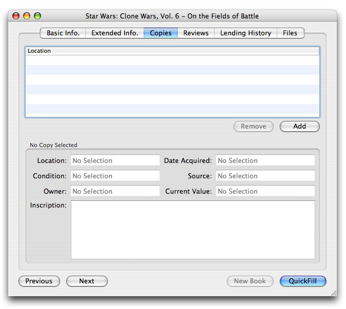
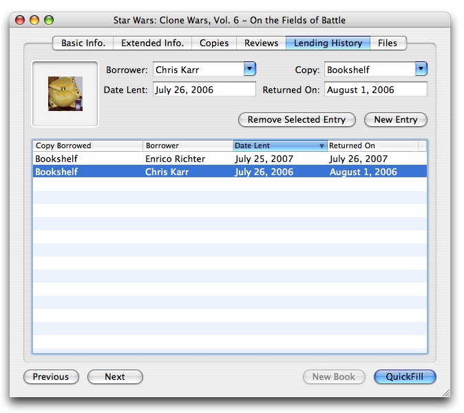
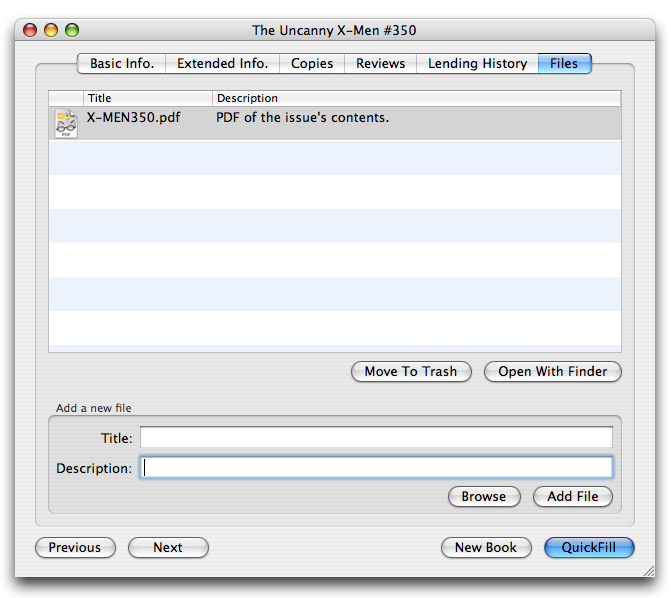

Copies, Reviews, Lending History, & Files
In addition to providing fields to record metadata about your collection, Books also provides a couple other helpful features within the book information window.
The Copies tab allows you to track multiple copies of a single book, including the location, condition, and any inscription associated with that particular physical book.

The Copies Tab
To begin using this, click the Add button to create a new copy record and customize it using the fields below.
The Reviews tab is similar to the Copies tab, but it allows you to keep track of your prior readings of the book and to record your feedback from each reading. There are some books that get better with each reading and you can use this to track how your opinion has changed. You can also use this to keep track of friends' and family's feedback, too.
The Lending tab allows you to track who you've lent your books to. It's fully integrated with Address Book, so your friends are already listed under the Borrower field. To add a new "check out, simply click the "New Entry" button and fill out the information. If you have not defined any copies for a particular record, you may leave the Copy field blank and it will still work.

The "Lending" Tab
Finally, the Files tab allows you to associate files with book records. This is useful if you have some extra cover scans, a PDF version of the book, or a document containing your notes.

The Files Tab
To add a new file to the record, click the Browse button to locate the file you would like to include. Add a title and description, then click Add. The new file will appear in the table above and can be launched by selecting the file and clicking Open With Finder. This will launch the file in the default application for its type.
Did You Know?
Some of the fields available in these extra tabs can be displayed in the list and details portions of the main window. Right-click on the table in the main window to see a list of available columns. In the Details tab in the preferences, you can add these fields to the main window's display. Not all fields will be available in this way, so explore a bit to see which are.